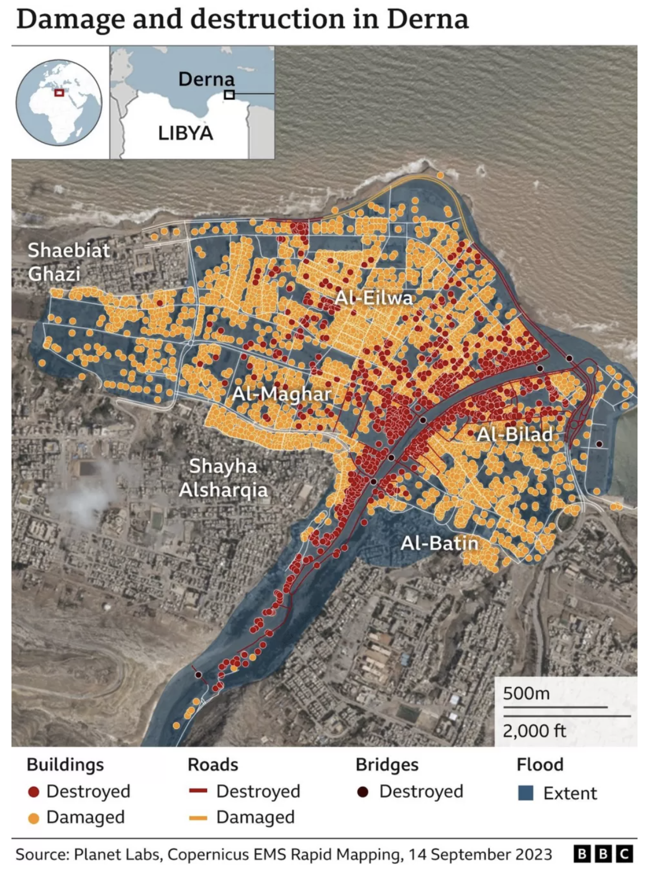

Research
Background
Derna is a coastal city located at the edge of Libya, which is a Mediterranean country located in the tropics. Thus, it is more vulnerable to strong winds that bring about tropical storms and floods. Since 2023 is an El Niño year, surging temperatures had warmed up the ocean, fueling a tropical storm named Storm Daniel, the deadly storm that had resulted in the flood. Moreover, anthropogenic factors also had a hand in the tragedy. Despite warnings to repair and maintain the two dams at Wadi Derna that had cracks and fissures the authorities had ignored the warnings. Thus, when Storm Daniel occured, the unprecedented intensity of the storm had caused both dams to fail and collapse.
We could explore the ‘zoning’ strategy, where we categorise each area/ residential town in Derna and create a road network analysis that determines which emergency centres and healthcare facilities are nearest to them. This forms a more systematic approach in evacuation planning, where people are more likely to evacuate to the places they are assigned to go during an emergency, reducing panic and confusion amongst people. This also helps to keep track of the capacity of each facility, reducing the chance of overcrowding at the same facility as people are assigned a location to go to that is within means and capacity. The people of Derna city can be educated of this strategy by informing them a list of locations they could go to during a certain flood intensity, and with warning and prediction systems in place, they will be able to gauge which is the best location for them to head to before or during a flooding event.
In the future, we could explore using the shortest path QGIS method to analyse the possible paths post flood that residents or rescuers can take to address food and water shortage emergencies. This method will aid in reducing the time taken for the residents to access basic necessities while waiting to relocate to a safer place, reducing their vulnerability to starvation, dehydration and illnesses.
Climate and Infrastructure Issues
The Libyan government has been plagued with political instability as different states are ruled by opposing parties. Derna City is ruled by the rebel coalition, which is not recognised by the international community. This made it difficult to receive aids. Moreover, due to political tension, the government did not bother repairing the dams despite experts warning them about it. This had led to the Derna dam collapse, resulting in one of the worst flooding in Africa.
Eastern Libya is situated in a low lying area and have weak infrastructure. Derna City is also located at the bottom of very steep mountains. Additionally, the soil was very dry and cracked after the summer, which was not equipped to absorb large amounts of water. This made it very susceptible to disaster as prolonged rainfall can cause flooding.
The recent Storm Daniel has led to the collapse of both dams, which have not been properly maintained in decades. The roads and bridges in Derna City were also not built to be resilient against such disasters. The miscommunication and poor planning of pre and post disaster led to the death of at least 5,000 people, with another 6,000 missing and about half the city’s total population of 90,000 displaced from their homes.
Incompetent Government
When Storm Daniel was approaching, residents were told to stay at home rather than being evacuated. It was stated that evacuation efforts were inadequate as the warnings did not reach many of the people that needed to hear them. Moreover, no sufficient provision was made for where evacuated people should shelter, reiterating the need for more evacuation centres to accommodate residents.
Furthermore, residents were also instructed to stay indoors, and people who asked to evacuate were not given clear instructions as to where to evacuate to. There were also insufficient warning and prediction systems in Derna city to safely evacuate the residents out

References
Saeed, A., Ibrahim, B., & Mahmoud, Y. (2023, October 10). Libya floods: The flawed response that increased Derna death toll.BBC.
Mellen, R., Karklis, L., Granados, S., Ledur, J., & Stillman, D. (2023, September 14). See why Libya’s flood were so deadly in maps and videos. The Washington Post.
https://www.washingtonpost.com/world/2023/09/12/deadly-libya-flooding-cause/
Lucas, S. (2023, September 20). Libya Floods: The Drowning of Derna Was A Man-Made Disaster Decades In the Making. The Conversation.